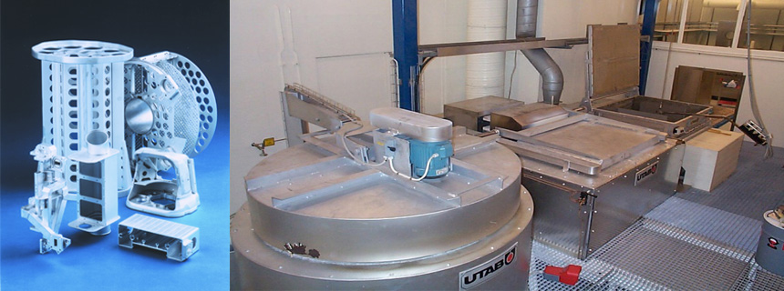

SALTBADSLÖDNING

Saltbadlödning är en metod för hårdlödning av aluminumlegeringar. Den utvecklades i USA under 1950-talet främst för att sammanfoga vågledardetaljer till radarutrustningar. Huvudsakliga användningsområden idag är tillverkning av värmeväxlare för kylning av elektronik och snabb prototypframtagning av finmekaniska komponenter. Saltbadlödning är också oftast ett ekonomiskt mer lönsamt alternativ till gjutning vid framtagande av komponenter i mindre serier. Idag arbetar vi bl a med företag inom försvarsindustri och medicinteknik, men också med helt fristående projekt där en konstruktör vill ha en snabb möjlighet att t ex testa hållfasthet och konstruktion i någon detalj.
Svensk standard för lödning är FSD 5155
Amerikansk standard är MIL-B-7883
Saltbadlödningens fördelar är många, bl a
• Jämn uppvärmning av hela arbetsstycket
• Ingen risk för genombränning eller smältning av grundmaterialet
• Ett stort antal fogar kan lödas samtidigt
• Lödning av normalt svåråtkomliga fogar
• Tillförlitliga och reproducerbara fogar av hög kvalitet med små fogradier och jämn yta
• Väsentligt kortare ledtider
• Mycket god hållfasthet i fogen